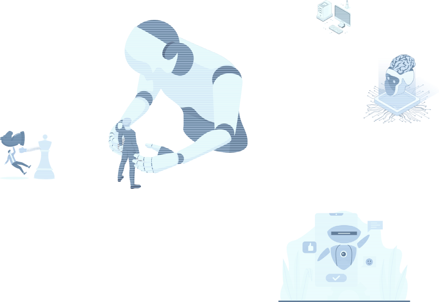
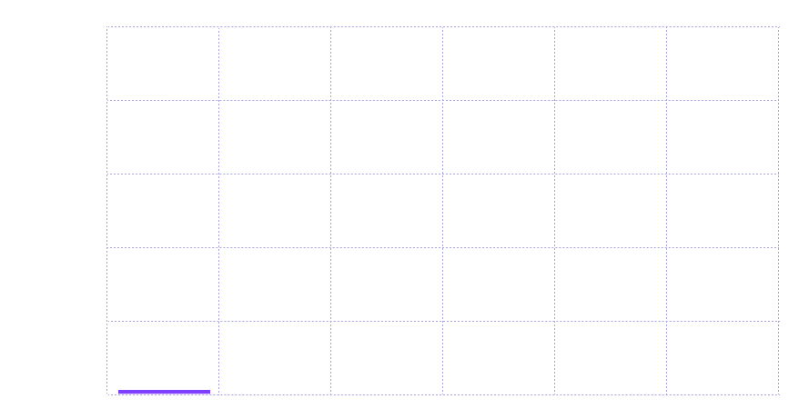
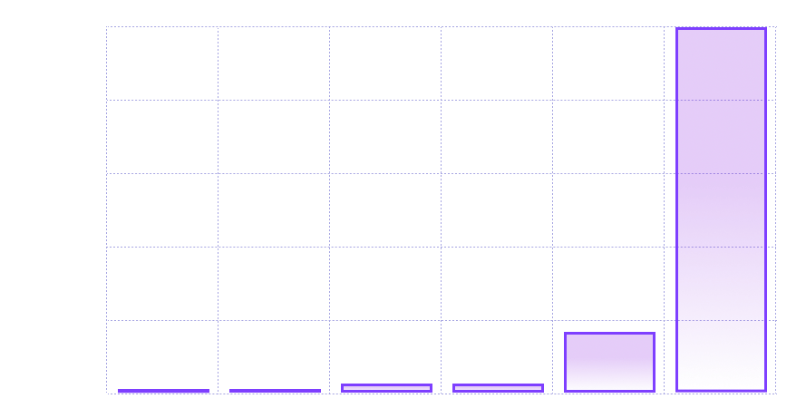

AVANCES Y EVOLUCION

Pac-Man - 1980
Introdujo comportamientos diferenciados en los fantasmas para
atrapar al jugador
Marcó una revolución en la inteligencia artificial de esa época
Blinky

Persigue de cerca a Pac-Man hasta atraparlo
Pinky
Embosca a Pac-Man al posicionarse 4 casillas adelante
Inky
Rodea a Pac-Man según su posición y la de Blinky
Clyde
Persigue a Pac-man si está cerca, y sino, actúa libremente.
Patrones específicos que le dieron una dimensión estratégica al
juego
Éxito masivo de Pac-Man en los años 80 y su influencia en juegos
posteriores
AVANCES Y EVOLUCION
Deep Blue - 1997
Campeón del mundo de ajedrez es derrotado por la IA
Deep Blue: Ordenador lanzado por IBM
Garry Kasparov: campeón del mundo de ajedrez
dió pie a películas futuristas con la IA como protagonista
1997 - Surgen los agentes inteligentes
programas de software diseñados para realizar tareas específicas de
manera autónoma
1990s: Agentes inteligentes
Actualidad: Sofisticados chatbots y asistentes virtuales


Pong (1972): Uno de los primeros videojuegos comerciales que
utilizaba IA básica para controlar la paleta del oponente.
Capacidad de procesamiento: 740 KIPS (mil instrucciones por segundo).
Capacidad de procesamiento: 740 KIPS (mil instrucciones por segundo).

Pac-Man (1980): Introdujo comportamientos diferenciados en los fantasmas, cada uno con su propia estrategia para atrapar al jugador.
Capacidad de procesamiento: 100 MIPS(millones de instrucciones por segundo).
Capacidad de procesamiento: 100 MIPS(millones de instrucciones por segundo).


Deep Blue vs. Garry Kasparov (1997): La victoria de Deep Blue en ajedrez mostró el potencial de la IA en juegos de estrategia.
Capacidad de procesamiento: 1000 MIPS (millones de instrucciones por segundo).
Capacidad de procesamiento: 1000 MIPS (millones de instrucciones por segundo).

NPCs Inteligentes: Los personajes no jugables (NPCs) ahora tienen comportamientos complejos y adaptativos, mejorando la experiencia de juego.
Capacidad de procesamiento: 1 TFLOPS (billones de operaciones de punto flotante por segundo).
Capacidad de procesamiento: 1 TFLOPS (billones de operaciones de punto flotante por segundo).

Generación Procedural: La IA se utiliza para crear mundos y niveles de juego de manera dinámica, ofreciendo experiencias únicas en cada partida.
Capacidad de procesamiento: 10 TFLOPS (billones de operaciones de punto flotante por segundo).
Capacidad de procesamiento: 10 TFLOPS (billones de operaciones de punto flotante por segundo).

Estadísticas Recientes: Según una encuesta realizada por Unity, el 62% de los estudios de videojuegos ya han integrado la IA en sus desarrollos.
Capacidad de procesamiento: 100 TFLOPS (billones de operaciones de punto flotante por segundo).
Capacidad de procesamiento: 100 TFLOPS (billones de operaciones de punto flotante por segundo).